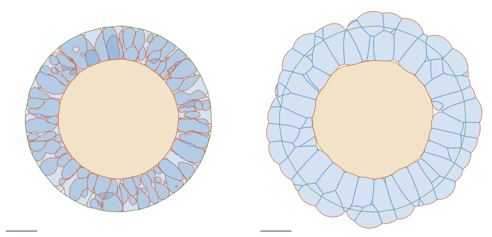

Monolayer and multilayer epithelia#
Run the vesicle of Epithelial vesicle with lumen and ECM with weak and with strong apical surface tension. Runser, Vetter & Iber (2024) use this setup to show that the layering of the epithelium is governed mainly by cortical tension: weak tension keeps a monolayer, strong tension leads to stratification (Fig. 3b,c of the paper; Citing SimuCell3D). The two parameter files are meant to give one run on each side of that transition, according to their header comments.
Files: parameters/benchmarks/fig3e_monolayer.xml,
parameters/benchmarks/fig3e_multilayer.xml, data/input_meshes/fig_3_vesicle.vtk (432
epithelial cells, one ECM surface, one lumen).
Compile-time configuration: the defaults (POLARIZATION_MODE_INDEX 1,
CONTACT_MODEL_INDEX 2, DYNAMIC_MODEL_INDEX 0).
Length: \(10^{-2}\) s of simulated time at a time step of 1e-7 s (100,000 iterations)
for each file; the paper’s protocol stops after 1,736 iterations.
Measured run time: paper’s protocol about 11 minutes for each file; as shipped, about 6.5 hours
for the monolayer file (which loses most of its cells) and more than two days for the multilayer
file. 2.1.0 on an 8-core cloud machine (GCP c2-standard-16, 8 threads), November 2026 (What to expect).


The monolayer file (left, apical tension \(10^{-5}\) N/m) and the multilayer file (right, \(10^{-3}\) N/m) run with 2.1.0 for the paper’s protocol, 1,700 iterations, not the full length of the shipped files. In the multilayer, many cells extend past the static ECM surface (green): 25-30% end with most of their nodes outside it (What to expect). Mid-plane cuts at one scale; bar 10 µm.#
The parameter files#
The two files are identical except for the output folder and one value, the surface tension of the apical faces of the epithelial cells:
File |
Apical \(\gamma\) |
Lateral \(\gamma\) |
Basal \(\gamma\) |
Output folder |
|---|---|---|---|---|
|
\(10^{-5}\) N/m |
\(4\times10^{-4}\) N/m |
\(10^{-3}\) N/m |
|
|
\(10^{-3}\) N/m |
\(4\times10^{-4}\) N/m |
\(10^{-3}\) N/m |
|
fig3e_multilayer.xml has the same parameters as parameters/core/parameters_vesicle.xml,
except for a sampling period of \(10^{-4}\) s (100 pairs of mesh files instead of \(10^4\)). The
epithelial cells grow at \(10^{-12}\) m\(^3\)/s and do not divide.
Warning
In the default build (CONTACT_MODEL_INDEX 2) the basal column of this table and the adhesion
strength have no effect. No face is ever labelled basal, so the faces of the epithelial cells
that face the ECM run with the apical surface tension (\(10^{-5}\) or \(10^{-3}\) N/m), not with the
basal \(10^{-3}\) N/m; and adherence_strength (\(\omega\)) is not used, because adhesion in
contact model 2 is a rigid coupling between nodes (Polarization,
Contact between cells). The paper’s Fig. 3e varies the normalized adhesion strength
\(\tilde\omega = \omega l / K\) over two orders of magnitude; that axis cannot be reproduced with these
files on a default build, where every \(\omega\) gives the same result. Only contact model 0 uses
\(\omega\) and basal faces, and these files have not been tested with it. Which contact model the
paper used for Fig. 3e is not documented (Release 1.0).
Note
The paper expresses surface tension in the non-dimensional form
\(\tilde\gamma = \gamma / (K l)\), with \(K\) the bulk modulus and \(l = \langle V(t=0) \rangle^{1/3}\)
the cube root of the mean initial cell volume, and reports the transition between
\(\tilde\gamma = 0.02\) and \(0.10\) (Fig. 3e). For the 432 epithelial cells of fig_3_vesicle.vtk
the mean initial volume is about \(1.74\times10^{-16}\) m\(^3\), so \(l \approx 5.6\times10^{-6}\) m, and
with \(K = 2.5\times10^{3}\) Pa:
Face type |
\(\gamma\) (N/m) |
\(\tilde\gamma\) |
|---|---|---|
apical, |
\(10^{-5}\) |
\(7\times10^{-4}\) |
apical, |
\(10^{-3}\) |
0.072 |
lateral |
\(4\times10^{-4}\) |
0.029 |
basal (not used in the default build) |
\(10^{-3}\) |
0.072 |
The paper varies one surface tension for the whole cell, whereas these files vary only the apical tension, and the apical value of the monolayer file lies below the range explored in the paper. The two files therefore illustrate the transition but do not reproduce the Fig. 3e sweep point for point. The publisher correction changes a label of Fig. 3c to \(\tilde\gamma = 0.16\) (Citing SimuCell3D).
Important
The paper’s figures were produced with release 1.0. Results of 2.1 differ (Release 2.1), so the layer count of a 2.1 run is not expected to match the published data point for point.
Run#
From the build/ directory:
$ ./simucell3d ../parameters/benchmarks/fig3e_monolayer.xml
$ ./simucell3d ../parameters/benchmarks/fig3e_multilayer.xml
Each run deletes and recreates its own output folder, so the two runs do not overwrite each other.
What to expect#
The paper grows the cells “at a uniform volumetric rate without division until they had doubled in size”. At \(10^{-12}\) m\(^3\)/s and a mean initial volume of \(1.74\times10^{-16}\) m\(^3\), the mean target volume doubles after \(1.736\times10^{-4}\) s, that is 1,736 iterations. The shipped files run 58 times longer, \(10^{-2}\) s, and keep the cells growing. The November 2026 benchmark ran both lengths with 2.1.0 and with 1.0, one run per file and version, on 8-core cloud machines (GCP c2-standard-16, 8 threads).
The paper’s protocol (both files with simulation_duration set to \(1.736\times10^{-4}\) s):
Each run takes about 11 minutes (0.18 hours) with 2.1.0, and completes in every version.
The monolayer stays a monolayer: every epithelial cell touches both the lumen and the ECM.
In the multilayer, 37-41% of the cells lose contact with the lumen. But 25-30% of the cells end with more than half of their nodes outside the ECM surface, which is a static rigid shell: a large part of the “multilayer” is cells pushed out through the ECM, not stratification inside it (Limits of the model).
The two runs differ strongly in pressure, volume and contact area, but little in layer number: both have a mean of about one layer.
The shipped length (\(10^{-2}\) s):
fig3e_multilayer.xmlreached 87,084 of the 100,000 iterations in 48 hours with 2.1.0, when the run was stopped. Late in the run, 98-100% of the epithelial cells lay mostly outside the ECM, in every version tested.fig3e_monolayer.xmlloses its tissue in every version. The failure starts between iterations 3,600 and 5,800, from a state in which nothing looks wrong. 1.0 stops there with its mesh-refinement error, and 2.0 crashes. 2.1.0 removes 400 cells as numerically unstable (399 epithelial cells and the lumen), between iterations 5,457 and 30,560. Another 16 epithelial cells disappear without a log line. The run ends at iteration 100,000 with 18 of 434 cells and exits with status 0. Check the log of every run forRemovinglines (Safeguards).
For the paper’s protocol, copy each file and set <simulation_duration> to 1.736e-4 and
<sampling_period> to 1e-5 (18 pairs of mesh files).
At the end of the paper’s protocol, 1.0 and 2.x agree on the multilayer: the mean pressure is 351-352 Pa in 1.0 and 1.0 with two crash fixes, and 350-353 Pa across the 2.x builds (351 Pa in 2.1.0). They differ on the monolayer: 20 Pa in 1.0 against 25-27 Pa across 2.x (27 Pa in 2.1.0), and 1.0 detects about half the contact area. A likely cause is the closest-point error of 1.0 (Release 1.0).
What to look at#
Open the last
cell_data/result_*.vtkof each run in ParaView, colour bycell_type_id, and apply a Clip filter through the centre of the vesicle to see the cross-section of the epithelium between the lumen and the ECM.Compare the shapes of the epithelial cells: the paper measures cell shape by the sphericity \(\Psi = \pi^{1/3} (6V)^{2/3} / A\) (Fig. 3f), which can be computed from the
cell_volumeandcell_areaarrays, or from thevolumeandareacolumns ofsimulation_statistics.csv.
See also
Epithelial vesicle with lumen and ECM: the same tissue with the default parameters.
Cell mechanics: surface tension and the other mechanical parameters.